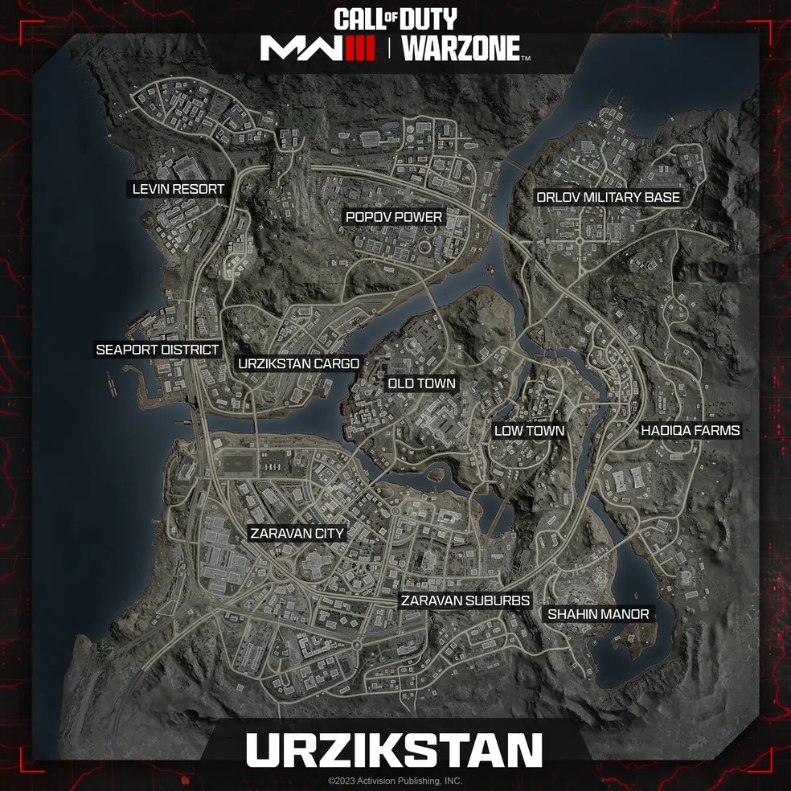
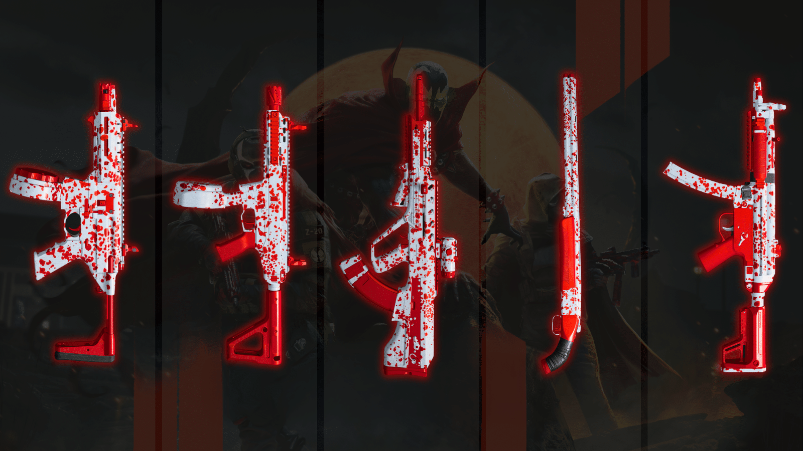

Call of Duty
*Call of Duty: Warzone* é um dos jogos de battle royale mais populares, oferecendo uma experiência intensa e dinâmica em um ambiente de combate moderno. Lançado em março de 2020, *Warzone* é um spin-off gratuito da série *Call of Duty*, ambientado no universo de *Call of Duty: Modern Warfare*. Abaixo estão alguns detalhes sobre os mapas, gameplay e características do jogo:
- 1. **Verdansk**: O mapa original de *Warzone*, Verdansk, é uma grande cidade fictícia que mistura áreas urbanas, industriais e rurais. O mapa é conhecido por sua diversidade de ambientes, que vai desde prédios altos e áreas comerciais até bases militares e áreas agrícolas. Verdansk recebeu várias atualizações e eventos ao longo do tempo, incluindo mudanças sazonais e eventos temporários.
- 2. **Rebirth Island**: Lançado em dezembro de 2020, Rebirth Island é um mapa menor em comparação com Verdansk. Inspirado na ilha de Alcatraz, o mapa é mais compacto e oferece um ritmo de jogo mais acelerado. Rebirth Island tem uma mistura de áreas fechadas e abertas, com muitas oportunidades para combate em distâncias variadas.
- 3. **Caldera**: Introduzido em 2021, Caldera substituiu Verdansk como o principal mapa de *Warzone*. Este novo mapa é uma grande ilha tropical que inclui uma variedade de terrenos, como praias, selvas e áreas montanhosas. Caldera trouxe novas mecânicas e um layout diferenciado em relação aos mapas anteriores, com um enfoque em áreas naturais e vastas.
- 4. **Vondel**: Adicionado em 2023, Vondel é um mapa urbano inspirado em uma cidade europeia fictícia. Oferece um ambiente mais denso e vertical em comparação com os mapas anteriores, com muitos edifícios altos e ruas estreitas, promovendo um estilo de jogo mais estratégico e tático.

### Gameplay
- 1. **Battle Royale**: Em *Warzone*, até 150 jogadores (ou até 200 em alguns modos) são lançados em um mapa grande, onde devem lutar para ser o último sobrevivente. O jogo é caracterizado por um estilo de combate em grande escala, onde a estratégia e a habilidade são cruciais para vencer.
- 2. **Modo Plunder**: Este modo permite que os jogadores coletem dinheiro espalhado pelo mapa e tentem ser a equipe com mais dinheiro no final do tempo. Ao contrário do modo Battle Royale, não há uma zona segura que se reduz ao longo do jogo, e o objetivo é acumular a maior quantidade de dinheiro possível.
- 3. **Revivals**: *Warzone* tem um sistema único de revival, como o Gulag, onde jogadores eliminados têm a chance de retornar ao jogo ao vencer um 1v1 em uma pequena área de combate.
- 4. **Loadouts e Equipamentos**: Uma das características distintivas de *Warzone* é o sistema de loadout, que permite aos jogadores personalizar suas armas e equipamentos antes do jogo começar. Durante a partida, os jogadores podem adquirir caixas de loadout que oferecem suas configurações personalizadas de armas e perks.
- 5. **Contratos e Missões**: O jogo inclui uma variedade de contratos que os jogadores podem completar para ganhar dinheiro e outros benefícios. Esses contratos variam desde o reconhecimento de áreas até a eliminação de alvos específicos.
- 6. **Temporadas e Eventos**: *Warzone* tem um sistema de temporadas que introduz novas atualizações, eventos temporários, e desafios. Essas temporadas frequentemente adicionam novos conteúdos, como armas, skins e mudanças no mapa.
### Características Adicionais
- **Crossplay**: *Warzone* oferece suporte para crossplay, permitindo que jogadores de diferentes plataformas (PC, PlayStation e Xbox) joguem juntos.
- **Atualizações Regulares**: O jogo recebe atualizações frequentes, incluindo novos conteúdos, ajustes de balanceamento e correções de bugs.
- **Progressão e Personalização**: Os jogadores podem desbloquear e personalizar uma variedade de armas e equipamentos, bem como ganhar cosméticos e outros itens para personalizar seus personagens.
*Call of Duty: Warzone* é conhecido por sua combinação de ação rápida, estratégias táticas e constante evolução, mantendo os jogadores engajados com novas experiências e desafios a cada temporada.
